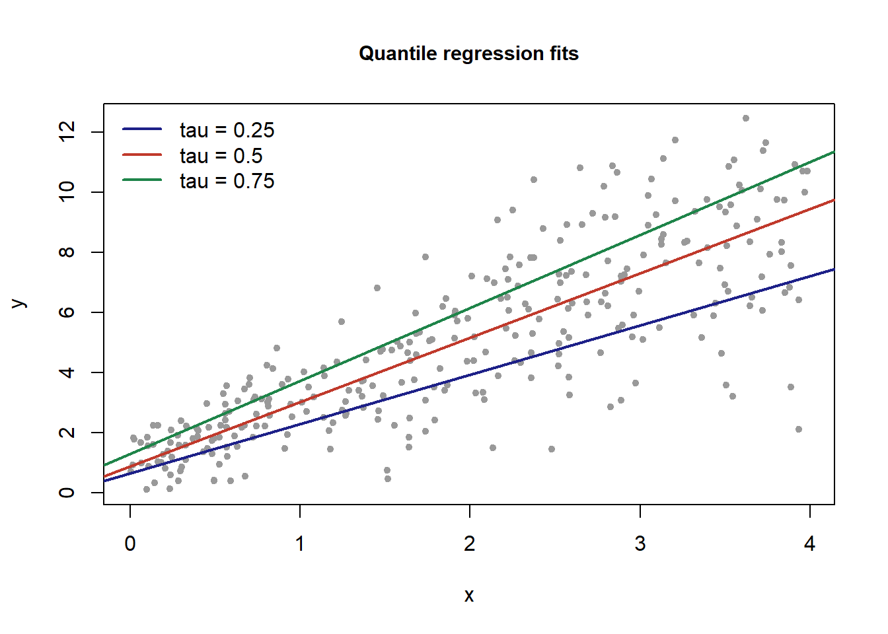

第 2 分位回归简介
分位回归（quantile regression）由 Koenker 与 Bassett 提出 (Koenker and Bassett 1978)，是经典均值回归的自然推广：它估计响应变量 \(Y\) 在给定协变量 \(X\) 下的条件分位数，而非仅条件均值，因而对 重尾分布与异方差性更为稳健。
2.1 目标函数
记 \(\rho_\tau(u) = u(\tau - \mathbf{1}(u < 0))\) 为分位损失函数 （check function），\(\tau \in (0, 1)\) 为分位水平。第 \(\tau\) 分位 回归系数定义为
\[\begin{equation} \hat{\boldsymbol\beta}(\tau) = \arg\min_{\boldsymbol\beta} \sum_{i=1}^{n} \rho_\tau\bigl(y_i - \boldsymbol{x}_i^{\top} \boldsymbol\beta\bigr), \tag{2.1} \end{equation}\]
其中 \(y_i\) 为响应、\(\boldsymbol{x}_i\) 为协变量向量。当 \(\tau = 0.5\) 时即最小绝对偏差（LAD）回归。
2.2 数值演示
下面用模拟数据演示 \(\tau = 0.25, 0.5, 0.75\) 三个分位水平的拟合。 数据由异方差模型生成：
set.seed(2026)
n <- 300
x <- runif(n, 0, 4)
beta <- c(1, 2)
y <- beta[1] + beta[2] * x + (0.5 + 0.6 * x) * rnorm(n)
rho <- function(u, tau) u * (tau - (u < 0))
fit_qr <- function(tau) {
obj <- function(b) sum(rho(y - b[1] - b[2] * x, tau))
optim(c(0, 0), obj, method = "BFGS")$par
}
tau_vec <- c(0.25, 0.5, 0.75)
beta_hat <- sapply(tau_vec, fit_qr)
rownames(beta_hat) <- c("intercept", "slope")
colnames(beta_hat) <- paste0("tau=", tau_vec)
beta_hat## tau=0.25 tau=0.5 tau=0.75
## intercept 0.6602513 0.881554 1.294790
## slope 1.6379787 2.142653 2.427394拟合结果如图 2.1 所示，分位回归能刻画不同分位水平下 协变量效应的差异（本例中斜率随 \(\tau\) 上升）。

图 2.1: <U+6A21><U+62DF><U+6570><U+636E><U+7684><U+4E09><U+4E2A><U+5206><U+4F4D><U+6C34><U+5E73><U+62DF><U+5408><U+7EBF><U+FF08>bookdown <U+81EA><U+52A8><U+7F16><U+53F7><U+FF09>
2.3 小结
- 式 (2.1) 是分位回归的统一框架；
- 通过 check function 的凸性，参数估计可转化为线性规划问题高效求解；
- 与均值回归相比，分位回归对异常值不敏感，且能揭示协变量对分布 不同位置的影响。